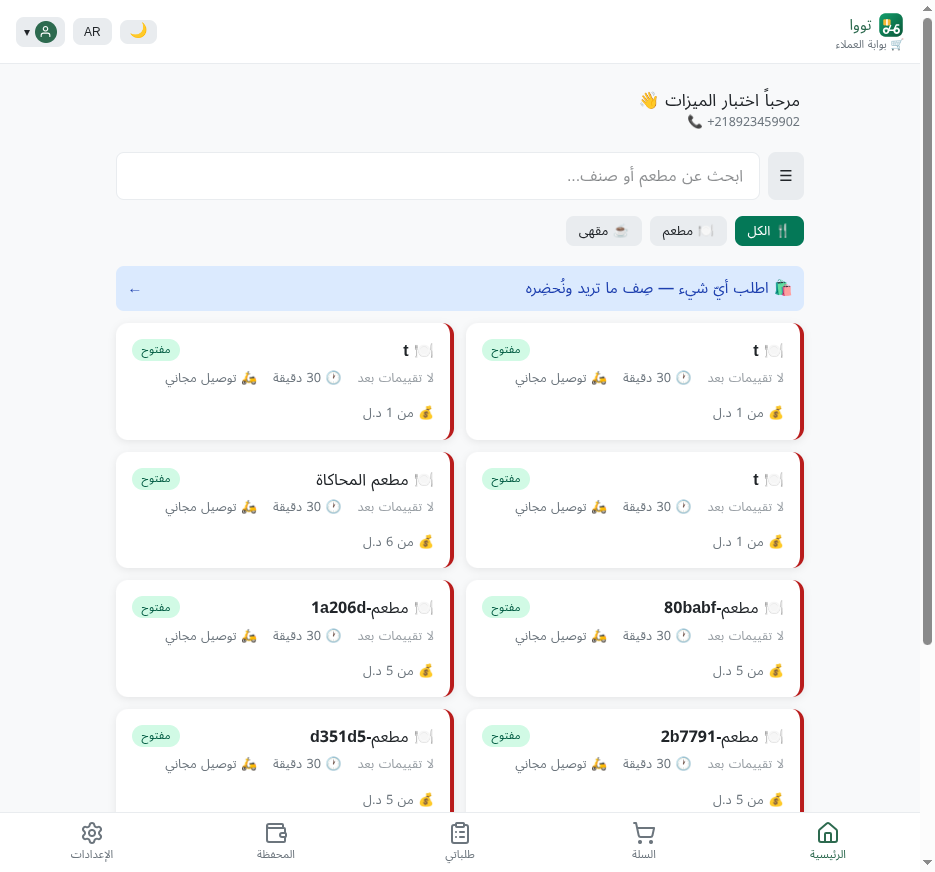
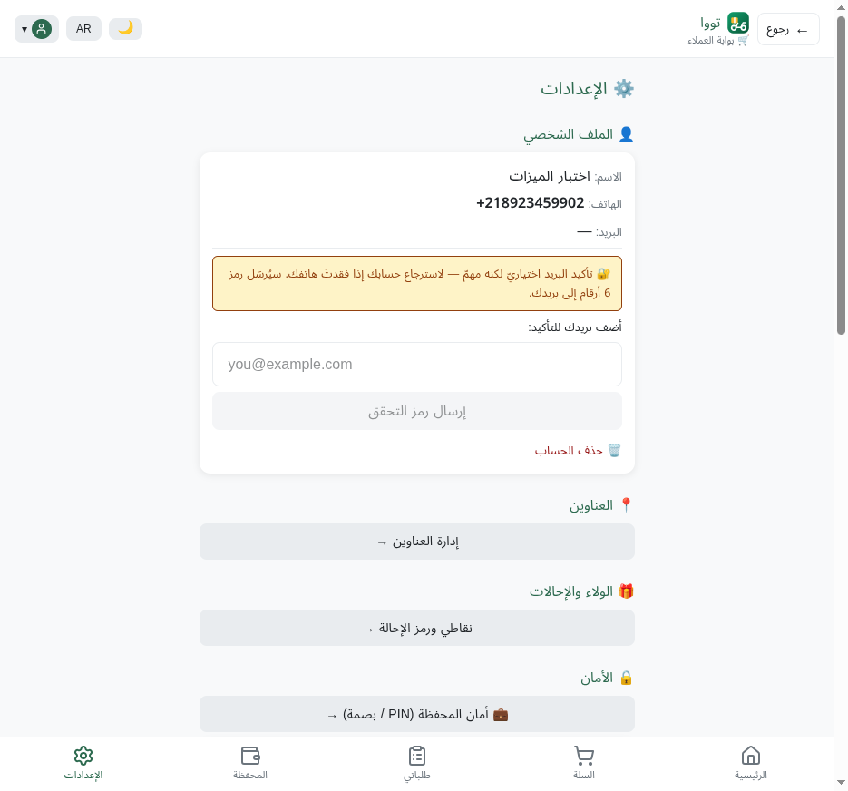
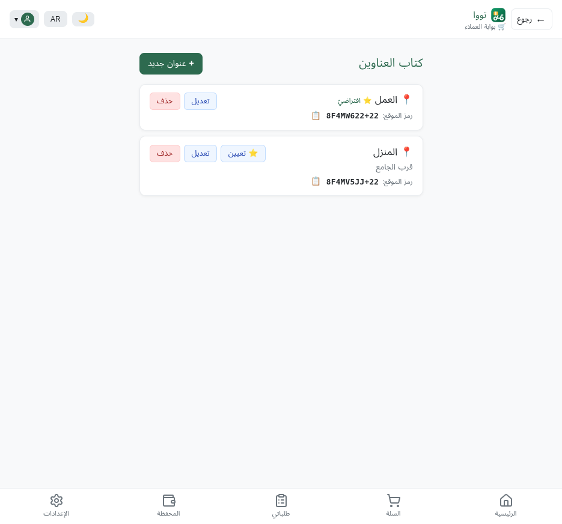
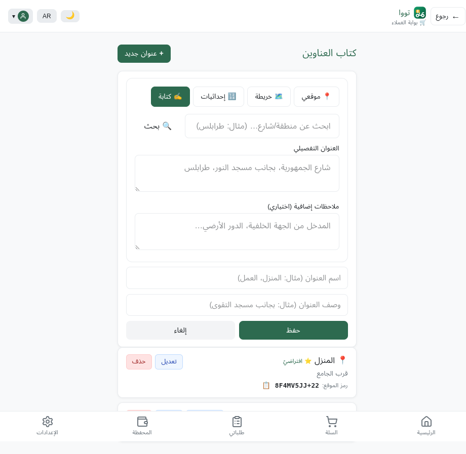

ما بنيناه — مرئيّاً على السيرفر الرئيسيّ
صور حقيقيّة من الموقع الحيّ https://tawanow.com (لا تصاميم) — التُقِطت بالمتصفّح اليوم 2026-06-23
كلّ ما بنيناه في الخطة التنفيذيّة السابقة (الموجات 0–3) مرفوعٌ ويعمل — وهذه الصور تُثبته أمامك
📸 6 صور حيّة من الموقع
✅ دخلتُ بحساب عميل حقيقيّ وجرّبتُ الميزات
🔒 الكود byte-identical (المحلّي = السيرفر)
الخطة التنفيذيّة السابقة باختصار: الموجة 0 (إيقاف المصادقة الثنائيّة MFA للأدمن مؤقّتاً للتطوير) ·
الموجة 1+2 (إصلاحات واجهة بلّغتَ عنها: التسجيل · عرض الهاتف كاملاً · بانر متابعة الطلب · مُحدِّد العنوان والخريطة) ·
3-1 (الافتراضيّ الذكيّ للعنوان — مُتحقَّق بـmigration على PG) · 3-5 (حلّ COD لطلبات لا-سائق — خلفيّ، مُبوَّب OFF بمراجعة FIN-COR).
ثمّ المزامنة الكاملة (Stage-2): السيرفر الرئيسيّ الآن مطابقٌ تماماً للمستودع المحلّي.
صفحة الترحيب · الهويّة
1) الموقع يعمل — واجهة «تووا» الكاملة
الصفحة الرئيسيّة الحيّة: هويّة تووا الموحّدة، بطاقات الأدوار الثلاثة (عميل/سائق/مطعم)، وقسم تنزيل تطبيق أندرويد (3 نسخ + QR).
https://tawanow.com/welcome — لقطة حيّة
الموجة 0 · MFA
2) الدخول يعمل بلا مصادقة ثنائيّة (MFA مُطفأ)
🟦 ماذا تغيّر: أوقفنا فرض MFA مؤقّتاً للتطوير. سجّلتُ الدخول بحساب عميل دون أيّ شاشة رمز TOTP — ودخلتُ مباشرةً للصفحة الرئيسيّة للعميل.

بعد الدخول مباشرةً — بوّابة العملاء
الموجة 1 · الهاتف
3) رقم الهاتف يظهر كاملاً (لا آخر 4 أرقام)
🟦 ماذا تغيّر: كنتَ بلّغتَ أنّ رقم الهاتف يظهر مخفيّاً (آخر 4 أرقام فقط) وهذا خطأ. الآن يظهر كاملاً — كما ترى في صفحة الإعدادات: +218923459902. وترى أيضاً مفاتيح الخصوصيّة (إظهار رقمي للسائق · مشاركة الموقع الحيّ).

الإعدادات — الهاتف بالكامل + الخصوصيّة
3-1 · العنوان الافتراضيّ (الميزة الأحدث)
4) الافتراضيّ الذكيّ للعنوان — يعمل حيّاً
🟦 ماذا بنينا: العنوان الافتراضيّ المثبّت يعلو القائمة بشارة «⭐ افتراضيّ»، وكلّ عنوان آخر معه زرّ «⭐ تعيين» لجعله الافتراضيّ. هذا الإصلاح الخلفيّ الحقيقيّ (عمود is_default + ترتيب على الخادم + migration aa60 مُتحقَّق على PostgreSQL).
قبل الضغط: «العمل» هو الافتراضيّ (⭐ في الأعلى)، و«المنزل» معه زرّ «⭐ تعيين».

كتاب العناوين — «العمل ⭐ افتراضيّ» أولاً
3-1 · برهان حيّ
5) ضغطتُ «⭐ تعيين» على «المنزل» — فتبدّل فوراً
🟦 برهان أنّه يعمل: بمجرّد الضغط على «تعيين» عند «المنزل»، صار هو «⭐ افتراضيّ» وانتقل للأعلى تلقائيّاً، ونزل «العمل» وظهر معه زرّ «تعيين». التبديل + إعادة الترتيب فوريّان على الموقع الحيّ.
الموجة 2 · مُنتقي الموقع
6) مُنتقي الموقع (الخريطة) — إصلاح إغلاق الشاشة
🟦 ماذا تغيّر: كنتَ بلّغتَ أنّ شاشة التسجيل/العنوان تُغلق وترجع للرئيسيّة عند الضغط على عناصر اختيار المكان. السبب: أزرار بلا type=button كانت تُرسِل النموذج. أصلحناها (+ ARIA). الآن التبويبات الأربعة تعمل بثبات: 📍 موقعي · 🗺️ خريطة · 🔢 إحداثيات · ✍ كتابة.

«+ عنوان جديد» → مُنتقي الموقع بالتبويبات المُصلَحة
الخلاصة — كلّ ذلك حيّ على السيرفر الرئيسيّ
| ما بنيناه | الحالة على tawanow.com |
|---|
| الموجة 0 — إيقاف MFA | ✅ الدخول بلا شاشة TOTP (صورة 2) |
| الموجة 1 — عرض الهاتف كاملاً | ✅ +218923459902 كاملاً (صورة 3) |
| الموجة 1/2 — مُحدِّد العنوان والخريطة | ✅ التبويبات تعمل (صورة 6) |
| 3-1 — الافتراضيّ الذكيّ للعنوان | ✅ يعمل حيّاً + التبديل فوريّ (صور 4–5) |
| 3-5 — حلّ COD لا-سائق | ✅ منشور خلفيّاً · مُبوَّب OFF بأمان (لا واجهة — يُفعَّل عند الحاجة) |
| المزامنة الكاملة (Stage-2) | ✅ الكود byte-identical (المحلّي = السيرفر) |